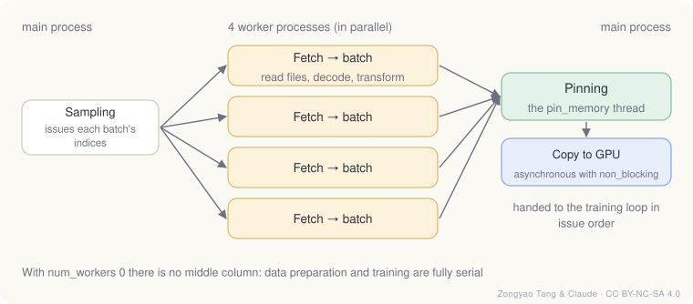

The thread: first confirm the GPU really is waiting for data → take apart how a batch comes into being and see which stations it passes → which station each argument tunes → how the last station (the copy to the GPU) overlaps with computation → and an often overlooked cure: much preprocessing need not be done during training at all.
Part 2 · The PyTorch execution stack2.4 The data supply
Translated by AI (Anthropic's Claude) from the Chinese edition. The Chinese original is the reference.
This unit answersWhen the GPU is waiting for data, where is the data stuck? What does each DataLoader argument tune?
Follows "waiting for data" in 0.1 and pinned memory and multiple processes in 0.3: this unit covers the very front of the pipeline in depth.
- The GPU is waiting for data: check the data pipeline first
- The birth of a batch: sampling, fetching samples, collating, pinning, onto the GPU
- Which station of the pipeline each argument tunes
- pin_memory plus non_blocking: letting the copy to the GPU overlap with computation
- The easiest optimisation: preprocessing that can be done in advance should not wait until training
Explanation
1The GPU is waiting for data: check the data pipeline first
Before every training step, the CPU has to read data, decode it, augment it and copy it to the GPU. Whenever this chain is slower than the GPU's computation, the GPU can only wait, and stretches of blank appear on the profiler's timeline.
As 0.1 explained, a training step is a pipeline of stages in series, and the first three (reading data, preprocessing, copying to the GPU) are done by the CPU. Whenever these three together are slower than the GPU's computation, the GPU falls idle periodically.
Three levels of evidence, coarse to fine.
- The utilisation curve. Sample GPU utilisation once a second: a saw blade, near 100% for a while, then very low, with a period that matches the time of a training step (0.2). Look at the CPU at the same time: the processes loading data fill their cores.
- Timestamps. In the loop, measure "how long it took to get the next batch". With an ample supply this is near zero (the batch was ready long ago and is just taken off a queue); with a short supply it is tens or hundreds of milliseconds, during which the training loop waits.
- The timeline. On the timeline exported by the profiler, the GPU row has regular gaps. During those gaps the main thread is stuck in the DataLoader's call to get data.
The cleanest check. Feed the same batch to the model again and again, without reading any new data. If throughput jumps, the difference is the cost of the data supply. The "troubleshooting" at the end of this unit gives the full steps.
Why it is so common. Two trends combine: each GPU generation is faster than the last, so a step's computation keeps getting shorter; while data preprocessing is Python on the CPU and has hardly got faster. So the same data pipeline can go from "good enough" to "the bottleneck" with a new GPU. With several GPUs it is more pronounced: the number of GPUs grows several times, the number of CPU cores does not.
Which tasks are prone to it. Those whose inputs need heavy computation on the CPU: images (decoding JPEG, augmentation), video, audio. A language model's input is usually integers tokenized in advance, data loading is very light, and it is rarely the bottleneck; if it is, most likely tokenization is being done during training (the last card of this unit).
An analogyLike a motorway with only one toll booth open: however wide the road, the cars cannot get through.
So when GPU utilisation swings up and down, check data loading first: more DataLoader workers, pinned memory, prefetching ahead, so that data preparation and computation overlap.
Builds on "Slow" on the pipeline comes in only four kinds: waiting for data, on compute, for orders, for the other GPUsSplit the time of one step: how much each stage takesThe operating system moves data around in memory; it must be "pinned" before it goes to a deviceProcesses, threads and the GIL: why data loading uses several processesSourcesAccelerate pin_memoryAccelerate num_workersAccelerate: how pinned memory works- Once it is confirmed to be a data problem, the next step is to take "data loading" apart.
2The birth of a batch: sampling, fetching samples, collating, pinning, onto the GPU
A sampler in the main process decides which sample indices this batch contains and sends them to a worker process; the worker calls the Dataset for each sample and preprocesses it, then uses the collate function to put them together into a batch; the finished batch goes back to the main process, where a thread puts it into pinned memory; the training loop takes it and copies it to the GPU.

Which process each station is done in Suppose
DataLoader(dataset, batch_size=32, num_workers=4, pin_memory=True).Station one: sampling (main process). The sampler produces a sequence of sample indices: a random permutation when shuffling, 0, 1, 2… when not. Every 32 indices form one group, the "order" for one batch. In multi-GPU training a distributed sampler gives each process indices that do not overlap with the others'.
Station two: fetching samples (worker processes). The main process puts the orders on a queue, and the 4 worker processes each take from it. Given a group of indices, a worker calls
dataset[i]for each: read the file, decode, transform. This is the heaviest step of the whole flow, and the reason for using multiple processes (0.3: the GIL).Station three: collating a batch (worker processes). Once all 32 samples are fetched, the collate function stacks them into one tensor. By default this is
torch.stack; when samples differ in length (text), you write a collate function of your own to pad them.Station four: back to the main process. The worker puts the finished batch on a result queue. The tensors' data lives in shared memory and only a "handle" travels through the queue, so the batch does not have to be copied again.
Station five: pinning (a thread in the main process). With
pin_memoryon, a dedicated thread takes batches from the result queue and copies them into pinned memory (the thread described in the source walkthrough of 0.3).Station six: onto the GPU (the training loop). The line
x = x.to(device)in your code.Workers work ahead. The main process does not wait for the training loop to ask before sending orders; it sends a batch of them out in advance. Each worker has several orders in hand at once (controlled by
prefetch_factor, default 2). So whenever the training loop comes to take a batch, there is usually one already waiting on the result queue. This is "fill the waiting with other work" from 0.1: while the GPU computes on the current batch, the CPU prepares the next ones.Order is guaranteed. The order in which the 4 workers finish is unpredictable, but the DataLoader hands you batches in the order the orders were sent. Those finished early wait for the ones before them. So one especially slow sample (a huge file, say) holds up every finished batch behind it.
With
num_workers=0. There are no worker processes; stations two and three run in the main process, made on the spot when the training loop asks. Data preparation and training are fully serial, with no overlap at all. This is the default, and the single most common cause of low GPU utilisation.An analogyLike a restaurant's kitchen: the head waiter hands out the orders (sampler), several cooks each make a dish (workers), it is plated (collate), handed over at the pass (between processes), put under the heat lamp before going out (pinning), and finally served (copied to the GPU).
So "data loading is slow" is not a one-line problem; first find which station is slow: the preprocessing of each sample, collating the batch, passing it between processes, or the final copy.
Builds on Processes, threads and the GIL: why data loading uses several processesOne training step is a pipeline of stages in series; the slowest stage sets the speed- With the six stations clear, every DataLoader argument has its place.
3Which station of the pipeline each argument tunes
num_workers decides how many processes fetch samples and collate batches in parallel; prefetch_factor how many batches each process prepares ahead; persistent_workers whether the processes are kept after each epoch; pin_memory whether there is an extra pinning step; batch_size affects the work at every station.
num_workers: the parallelism of stations two and three. The most important one.- Too few: the CPU is underused, and samples cannot be fetched as fast as the GPU consumes them.
- Right: the supply just outpaces the GPU's consumption.
- Too many: more than the available CPU cores, so the processes fight each other; each process takes memory (its own Python interpreter and imported libraries, and the dataset object may be copied); and if the bottleneck is really how fast storage reads, more processes just wait for the disk together.
Be especially careful with several GPUs: each training process has its own set of workers. 8 GPUs with 16 workers per process is 128 processes fighting over the CPU, on top of the threads that need CPU from 0.3 and 6.2 (the pinning thread, NCCL's proxy threads). The cores available have to be counted as "total cores ÷ number of GPUs".
prefetch_factor: the depth of the buffer through stations two to four. How many batches each worker prepares ahead. It does not raise the average supply rate; its job is to absorb fluctuations: when a batch is occasionally slow to prepare, the stock in the buffer fills in. Raising it costs memory: batches in the buffer = number of workers × this value.persistent_workers: the wait at the start of each epoch. By default all worker processes exit at the end of each epoch and are created anew at the start of the next. Creating processes, re-importing libraries and reopening the dataset take time, which adds up for small datasets with many epochs. Set it to True and the processes stay alive.pin_memory: station five. A little more CPU time spent pinning, in exchange for a faster station six that can also be asynchronous (next card). Generally it should be on when training on a GPU.batch_size: affects every station. The larger the batch, the more samples each batch fetches (station two is slower), but the GPU also processes more per step. What the data pipeline cares about is "samples per second", which has little to do with batch size.drop_last. Drops the last, partial batch. Its link to speed: a batch of a different size makes paths optimised for fixed shapes (a compiled model, the allocation pattern of 2.1) do extra work once.An empirical starting point. Start
num_workersat about half "the CPU cores available per GPU", turn onpin_memoryandpersistent_workers, leave the rest at defaults. Then measure with the method in the "troubleshooting" below rather than guessing.An analogyLike tuning a production line: more workstations (num_workers), a larger buffer before each station (prefetch_factor), not sending the workers home after the shift (persistent_workers), one more preparation step (pin_memory). Each knob affects only its own station.
So before tuning, know which station is the bottleneck. Adding workers when there are already enough not only does nothing but slows things down, as the processes fight over CPU and memory.
- The last station is copying the batch to the GPU. This step can be made to take no time.
4pin_memory plus non_blocking: letting the copy to the GPU overlap with computation
Copying from pinned memory to the GPU can be asynchronous: the CPU starts the copy and returns at once, and the hardware finishes it in the background. After x.to(device, non_blocking=True), the CPU can go straight on to issue the next tasks, while the copy runs alongside the GPU finishing the previous batch's computation. Both conditions are needed: the data is in pinned memory, and the call says non_blocking=True.
Recall 0.3. To copy data in ordinary memory to the GPU, the driver first copies it into a pinned staging area, then sends it to the GPU by DMA. This is synchronous; the CPU waits throughout. Data already in pinned memory can go by DMA directly, and asynchronously.
Four combinations.
pin_memory non_blocking Result No No Two copies, synchronous. The CPU waits until they are done. No Yes Same as the row above. The data is not in pinned memory, asynchrony is impossible, and it falls back to synchronous. Yes No One copy, but still synchronous. Yes Yes One copy, asynchronous. The CPU returns at once. Only the last one gets all the benefit.
What happens after going asynchronous. When
x = x.to(device, non_blocking=True)returns, the copy has only just started. Your code then callsmodel(x), and the first kernel that usesxis queued behind this copy (they are on the same CUDA stream and run in order; 3.6 goes into this), so it never reads half-copied data. You do not need to wait yourself.What is saved is CPU time: the CPU need not stop for these few milliseconds and can go straight on to issue the tasks of the model's forward pass. For small models where giving orders is already tight on the CPU (2.3), this is worth even more.
How big the effect is. It depends on how much of a step the copy takes. A text model's batch is a few integer indices, tiny; the copy takes a fraction of a millisecond anyway, and asynchrony makes little difference. An image or video model's batch may be hundreds of MB, which at PCIe bandwidth (5.1) takes tens of milliseconds, and then it is significant. "Splitting the time of a step" from 0.2 tells you directly how much this stretch takes.
A way of writing that defeats asynchrony. Right after
.to(device, non_blocking=True), do something that needs the result immediately, such asprint(x.sum().item())..item()has to bring the value back to the CPU, so it must wait for all earlier tasks to finish, and the asynchrony is wasted.An analogyLike choosing "collection from your door" when sending a parcel: once you have booked it you can get on with other things, and the courier comes to pick it up. But only if the parcel is already packed and waiting by the door (pinned); if you have to hand it over in person, you can only wait.
So turning on pin_memory without writing non_blocking saves one copy, but the CPU still waits for the copy to finish; writing non_blocking with data not in pinned memory quietly falls back to a synchronous copy.
Builds on Which station of the pipeline each argument tunesThe operating system moves data around in memory; it must be "pinned" before it goes to a deviceDMA: the device moves the data itself; the CPU only gives the orderFive ideas come back in every layerSourcesBest Practices §9.1.1–9.1.2 Pinned memory and asynchronous transfersPyTorch docs: CUDA semantics (Use pinned memory buffers)- The previous cards were all about preparing data faster. There is a more basic question: does this preparation have to happen during training at all?
5The easiest optimisation: preprocessing that can be done in advance should not wait until training
Of the work done for every sample fetched during training, anything whose result is the same every time (decoding, tokenizing, resizing to a fixed size) can be done once in advance, with the result stored in a format that can be read directly. Data loading during training is then just "read a contiguous run of bytes", taking almost no CPU.
Divide the preprocessing of a sample into two kinds:
- Deterministic: the same result every time. Reading the file, decompressing, decoding, tokenizing, standardising the size, normalising.
- Random: different every time, and part of training. Data augmentation such as random cropping, flipping, adding noise.
The first kind can be done in advance.
How language models do it. Tokenize the whole corpus in advance into one long sequence of integers, stored as a binary file. During training, open it with a memory map; each sample is a contiguous run of integers in the file, and "loading" a batch just reads out a few runs and stacks them, taking microseconds. Karpathy's nanoGPT and the GPT-2 reproduction video (1.5) do exactly this. So for language models data loading is rarely the bottleneck; when it is, most likely someone put tokenization into the Dataset's
__getitem__.How images and video do it. Decoding JPEG is CPU-intensive, and random augmentation is usually needed too, so not everything can be done in advance. Common compromises:
- Shrink images in advance to near the training size before storing them; the work of decoding falls with the number of pixels.
- Pack many small files into a few large ones (see 7.4); sequential reads are much faster than random ones (the memory hierarchy of 0.3).
- Move decoding and augmentation onto the GPU (NVIDIA's DALI takes this approach). It turns this stretch of the pipeline from "waiting for data" into "using a little GPU compute", which works well on machines with few CPU cores relative to GPUs (say 8 GPUs and only 64 cores in one machine).
Why this works better than tuning arguments. Tuning
num_workersadds hands to "the same amount of work", capped by the number of CPU cores. Preprocessing in advance removes the work itself. The first can make it a few times faster at most; the second can make this stretch almost disappear. This is one of the ideas of 0.1 applied at its plainest; a sentence in 2.6 says the same thing: the fastest computation is the one you do not do.The cost. Preprocessed data is usually larger than the raw data (decoded images are much larger than JPEGs) and takes storage; and if the preprocessing changes, it has to be regenerated. So it suits a pipeline that has settled.
Troubleshooting: proving the bottleneck is the data, and finding the knee of the worker count
Step one: prove it is the data. The cleanest way is to take data loading out of the loop and see what the throughput ceiling is.
x, y = next(iter(loader)) # take just one batch x, y = x.to(device), y.to(device) for step in range(200): # feed the same batch again and again loss = model(x, y) loss.backward(); opt.step(); opt.zero_grad()(Remember to warm up and synchronise before timing, 0.2.) Call this throughput "the ceiling" and compare it with normal training:
- The two are close: data is not the bottleneck; do not spend time on it.
- Normal training is clearly lower: the difference is the cost of the data supply.
Step two: measure the data pipeline's speed on its own. The other way round, take the model out and run only the data:
t0 = time.perf_counter(); n = 0 for x, y in loader: n += len(x) if n >= 20000: break print(n / (time.perf_counter() - t0), "samples/second")This number must be clearly above step one's "ceiling" for the data to keep up.
Step three: sweep the number of workers. Run step two with
num_workersset to 0, 2, 4, 8, 16 and 32, and plot "samples/second" against the number of workers. The typical shape rises roughly linearly, then flattens, and may fall after that.- Take the point where the curve just flattens, and leave a little margin.
- If the curve flattens early and its plateau is still below the model's "ceiling": more processes will not help; the bottleneck is elsewhere. See whether every CPU core is full (if so, the preprocessing is too heavy; consider doing it in advance or on the GPU); see whether the disk or network storage has reached its read speed (if so, use faster storage, or copy the data to a local disk).
Step four: put them back together and check. Run normal training with the chosen number of workers; throughput should be close to step one's "ceiling". Take a look with
htoptoo: the core the main training process runs on should not be at 100% (that would be the framework overhead of 2.3), and the worker processes should be busy fairly evenly.Do it again with several GPUs. The best worker count for 8 GPUs is not the single-GPU value: the CPU is shared by 8 training processes. In the troubleshooting of 7.1, "each process is still slow with communication removed" points right here.
An analogyLike a restaurant's prep: washing, chopping and making stock are done before opening. When a customer orders, only the cooking is left. No restaurant starts washing the vegetables after the order comes in.
So when data is the bottleneck, first ask "must this work be done every time", then tune the worker count. Large-model training almost always does this: text is tokenized in advance, and training only reads the token ids.
Builds on Which station of the pipeline each argument tunesFive ideas come back in every layerOptimisation starts from a reproducible baselineUsed later in Large-scale data loading: pack huge numbers of small files into shards, and read them sequentiallyCase one: single-GPU training, GPU utilisation only forty percentSourcesAccelerate chapter 5, the data pipeline: pin_memory and workersPyTorch Performance Tuning Guide
Putting it together
When the GPU is busy then idle, suspect the data supply first. A batch passes five stations, sampling, fetching samples, collating a batch, pinning and copying to the GPU, and num_workers, prefetch_factor, pin_memory and the rest each tune one of them. pin_memory plus non_blocking lets the last station overlap with computation. The easiest optimisation is to do the preprocessing in advance and only read finished results during training.
Test yourself
Without looking back at the explanation, say it in your own words.
- How do you tell whether the GPU is waiting for data? What does it look like on the timeline?
- From one sample in the Dataset to a batch on the GPU, which stations does it pass? In which process is each done?
- Which part of the data pipeline does each of num_workers, prefetch_factor, persistent_workers and pin_memory affect? Why is more workers not always better?
- Why should pin_memory=True and non_blocking=True be used together? What does each do on its own?
- Which data preprocessing can be done offline in advance? Why is this more effective than tuning DataLoader arguments?